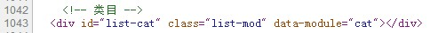

list 前端设计方案
- myhere @ 2013/6/26
目录
- 整体设计
- app
- 模块
- 性能&调试
- A/B Test管理
- 打包
- TODO
整体设计
- app: 负责模块公用的功能:
数据请求、黄金令箭、url 处理、时间统计
- mod: 负责渲染自己、内部事件绑定(app 方法)
- app 与 mod 相互引用
- 页面初始化过程:
- 初始化 app
- app 请求数据
- 找到页面中模块标示, 初始化各个模块
- 将模块添加到 app 中
- 异步请求回来渲染各个模块(render)
app
- css - 页面公用 css，布局
- 所有功能集中到 app 对象
模块 - 组成
- 一个模块相关文件放在一个目录
- vm 中模块标示

- tmpl 模板 -> js
- less -> css
- js
模块 - tmpl
- 前端模板
- 之前写在 vm, 迁移到 js 中
- 编译为 js 文件
- 可以缓存、维护方便
模块 - css
- 使用 less(使 css 可编程), 编译为 css
- 皮肤 - 定义变量，引用变量
- 宽度等计算(修改方便)
模块 - js
- kissy 模块定义规范
- 一个文件为一个模块
- 独立功能的单位
- p4p
A/B Test 管理
- A/B 版本对应 git 分支
- 不同版本在打包时打包出对应文件
打包
- node grunt 工具
- less 编译
- html tmpl -> js
- css/js 合并、压缩